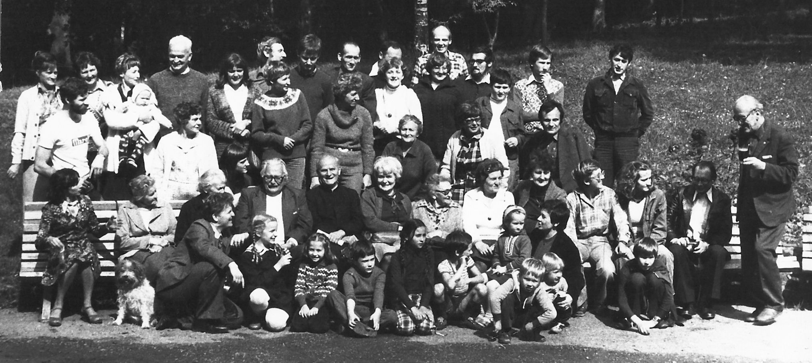

II Zjazd: Szalejów Dolny
Data zjazdu Wrzesień roku 1980
Miejsce Szalejów Dolny
Organizatorzy Jerzy i Marta Niewęgłowscy
Uczestnicy ...

Wspomnienia
Przestawianie samochodów na zjazdach zaczęło się od wesela Majki i Marka Szczepaniaków...